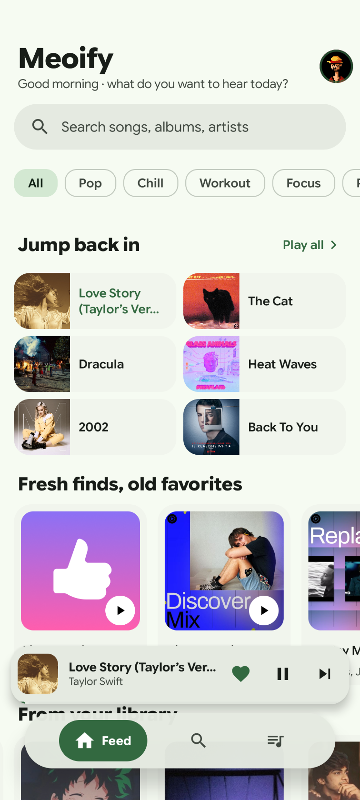
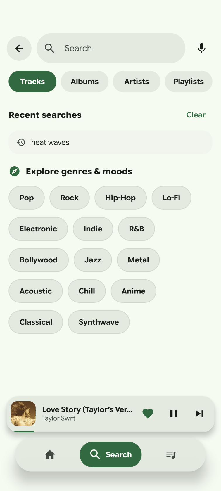
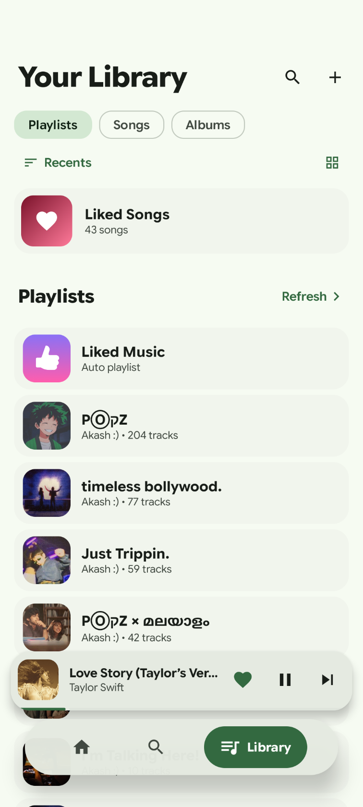
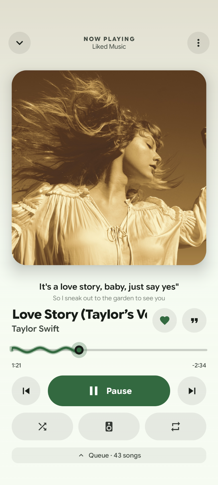
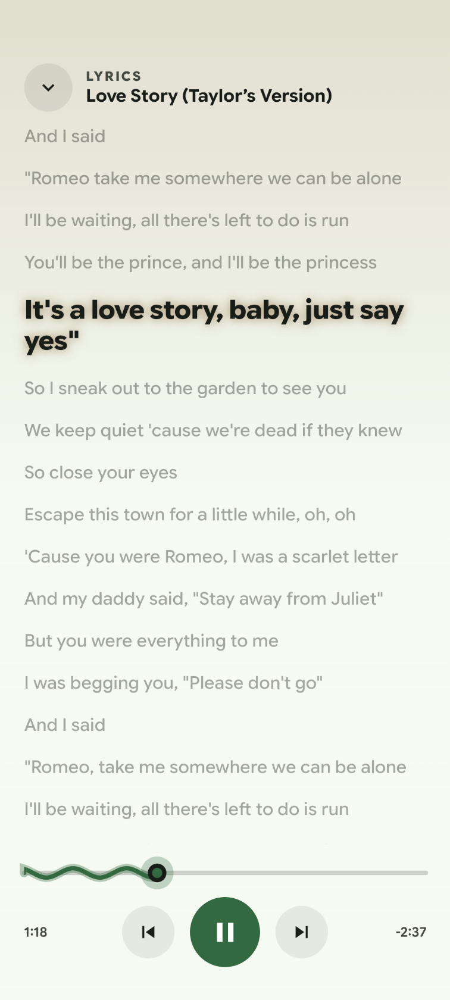

Purr-fectly tuned.
Meoify is an unofficial Android music player. It brings Spotify-style flow to YouTube Music’s catalog, wrapped in Material 3 Expressive design.
SHA-256:
- Android 8.0 and up
- GPL-3.0 licensed
- No analytics or tracking
Midnight Drive
Sample track
See it in action.
Home, search, your library, the full player, and synced lyrics.





What’s new.
Everything a music app should do, and a few things it should.
Meoify covers the basics in a Material 3 layout that follows your system theme. Here is what is in the app today.
Discover
- Personalized home. A greeting, quick picks, made-for-you mixes, trending songs, new releases, top artists and charts.
- Search that stays out of the way. A pill search field, voice input, live suggestions, recent searches and genre shortcuts.
- Filters that persist. Switch between Tracks, Albums, Artists and Playlists without losing your query.
- Pull to refresh wherever the catalogue can change.
Play
- Full player. Square artwork, a wavy seek bar, shuffle, repeat, mute, queue management and a floating mini player.
- Queue gestures. Hold a song to reorder the queue, or swipe it to remove it. Swipe a song in any playlist or Liked Songs to add it to the queue.
- Now Playing menu. The three-dot menu opens a sheet with queue, share, video and sleep options, plus full song details.
- Synced lyrics. LRC lyrics from LRCLIB with auto-scroll and tap-to-seek, a lyrics preview under the artwork, and a plain-text fallback.
- Sleep timer. Stop playback after 5, 10, 15, 30, 45 or 60 minutes.
- Background playback. Media3 and ExoPlayer, with lock screen and notification controls.
- Volume and output. A media volume slider with a Bluetooth battery badge.
- Listen Together. Listen in real time with friends. Room codes keep track changes, play and pause, and seek position in sync across devices.
Library and accounts
- Your music, in one place. Liked songs, playlists, saved albums and history, in list or grid layouts.
- YouTube Music playlists. Your account playlists appear in your library and open straight in the player.
- Works without an account. Use a local profile and library. Sign in only if you want a personalized feed and sync.
- Listening history sync. Real listens are reported to your account, the same way YouTube’s web player does it.
- Meoify Wrapped. Monthly, yearly and all-time insights, including top tracks, top artists, total hours and listening patterns. Everything is computed on your device.
- Backup and restore. Export playlists and your profile to a readable .json file.
Design and details
- Material 3 Expressive. Light, dark and pure-black themes, with dynamic colour on Android 12 and up, including the splash screen.
- Real album artwork. Covers come from Spotify, then Apple iTunes, then YouTube Music. Video frames are never used as artwork, and covers are cached so they load fast.
- High refresh rate. Uses up to 120 Hz where the display supports it.
- Sharing. Share songs or jump to album and artist pages from the track menu.
- In-app updates. Read release notes in Settings and get an optional home-screen prompt when an update is ready.
Pick how much audio you want.
Choose a mode in Settings, then Playback, or tap the quality pill on the Now Playing card.
| Auto | Adapts to your connection. Wi-Fi keeps the best stream, and mobile data stays balanced. |
|---|---|
| Hi-Res Audio | Up to 24-bit, 192 kHz FLAC from a hifi-api or Tidal-compatible server. |
| CD Lossless | 16-bit, 44.1 kHz FLAC from the same server. |
| Standard (320 kbps) | 320 kbps AAC from the same lossless server. |
| YouTube Music | 128 to 256 kbps AAC or Opus, the native YouTube Music stream. |
| Data Saver | 96 kbps AAC to reduce mobile data use. |
YouTube Music tops out at 256 kbps on its own. To go higher, add a server under Settings, then Playback, then Lossless server. Meoify accepts a hifi-api or Tidal-compatible server for Hi-Res FLAC, or a 320 kbps server for AAC, and detects which one you pasted. You can name the server and test it before saving. Meoify never upsamples or fakes lossless audio. If no server is set or it fails, those tiers fall back to the best YouTube Music stream. A new mode applies from the next track.
Build it yourself.
You need JDK 17 and Android SDK 36.
- Clone the repository.
- Build the signed release APK.
- Find the APK in the output folder.
git clone https://github.com/popeye0013/Meoify.git
cd Meoify
gradle assembleRelease
# Output: app/build/outputs/apk/release/app-release.apkFor a debug build, run gradle assembleDebug. Run the tests with gradle testDebugUnitTest.
Streaming uses NewPipeExtractor 0.27.1, patched for Android 8 to 12. Without the patch, playback crashes on those versions. To regenerate the patched jar offline, run tools/patch-newpipe-extractor/patch.sh.
Under the hood.
- Language
- Kotlin 2.4
- UI
- Jetpack Compose 1.9, Material 3 1.4
- Playback
- Media3 and ExoPlayer 1.8
- Networking
- OkHttp 4.12, InnerTube (WEB_REMIX)
- Streaming
- NewPipeExtractor 0.27.1, patched
- Images
- Coil 3
- Storage
- DataStore, kotlinx.serialization
- Lyrics
- LRCLIB
- Artwork
- YouTube Music, Spotify, Apple iTunes
Questions people ask.
Is Meoify affiliated with YouTube or Google?
No. Meoify is an independent, unofficial project. It is not endorsed by or sponsored by YouTube, Google or any music catalogue provider.
Do I need a YouTube Music account?
No. Meoify works with a local profile and library. Signing in is optional, and only needed for a personalized home feed, account playlists and history sync.
Does Lossless really play FLAC?
Yes, if you add a hifi-api compatible server under Settings, then Playback, then Lossless server. Without one, YouTube Music is capped at 256 kbps.
Where does the audio come from?
It streams from YouTube Music through NewPipeExtractor. Meoify does not host, store or redistribute any audio.
Is my data collected?
No analytics or tracking SDKs are included. Settings, playlists and history stay on your device. Optional YouTube Music sign-in talks directly to YouTube Music.
Why isn’t it on the Play Store?
Play does not allow third-party YouTube Music clients, so releases are published on GitHub.
How do I update?
Go to Settings, then About, and tap Check for updates. You can also install the newer APK over the current one. Your data is kept.
Contribute.
Issues and pull requests are welcome. Keep changes focused, match the existing Kotlin and Compose style, and run gradle testDebugUnitTest before opening a PR. For a bug report, include your Android version, Meoify version and steps to reproduce.